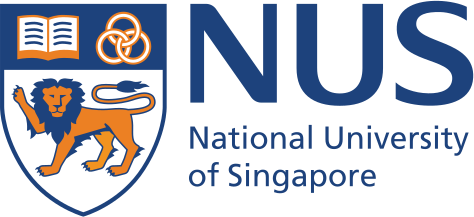
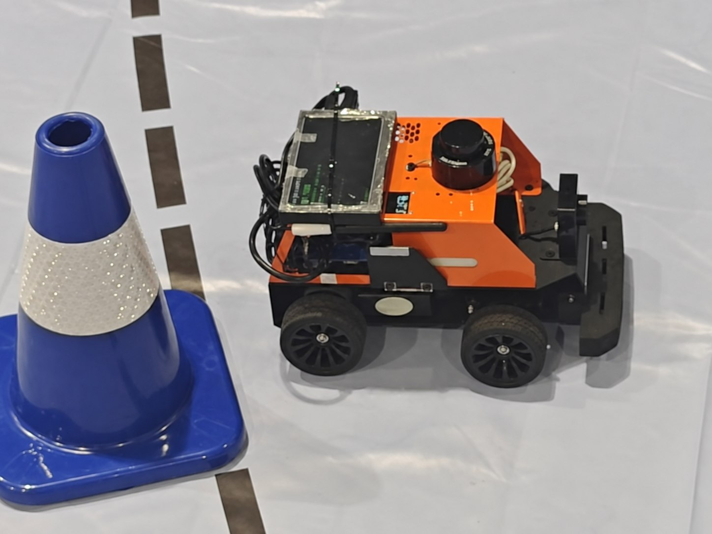

具身智能与人机交互Embodied Intelligence & HRI
面向机器人协作任务，关注意图推断、主动澄清、多模态状态建模与协作决策。Intent inference, active clarification, multimodal state modeling, and collaborative decision-making.
我关注具身智能、机器人控制、端侧智能与 AI Agent，尝试把感知、决策、控制和嵌入式部署连接起来，让算法在真实机器人系统中稳定工作。欢迎交流研究与项目合作，可通过 maxiaobing0518@foxmail.com 联系我。
I work across embodied intelligence, robot control, edge AI, and AI agents, connecting perception, decision-making, control, and embedded deployment into reliable robotic systems. I am open to research collaboration and project discussions—feel free to reach me at maxiaobing0518@foxmail.com.
我是华南理工大学自动化专业本科生，关注具身智能、机器人控制、多模态感知和端侧智能。
我希望把动力学、学习方法、软件系统与真实硬件连接起来，完成从算法原型、仿真验证到实体机器人部署的完整链路。
I am an undergraduate student in Automation at South China University of Technology, with interests in embodied intelligence, robot control, multimodal perception, and edge AI.
I aim to connect dynamics, learning methods, software systems, and physical hardware—from algorithm prototypes and simulation to deployment on real robotic platforms.
《一种鲁棒参数辨识有界变参神经动力学控制方法》正式公开。The invention patent application on robust parameter identification with bounded variable-parameter neural dynamics was published.
在 Edmund Low 副教授指导下完成自然语言处理、文本情感分析与 AI 无人机控制相关学习和小组项目。Completed coursework and a group project in NLP, sentiment analysis, and AI for UAV control under Associate Professor Edmund Low.
参与 ROS 多模态感知智能车的感知、导航、通信与系统联调。Contributed to perception, navigation, communication, and system integration for a ROS-based multimodal smart car.

自动化专业 · 工学学士在读B.Eng. Candidate in Automation

“人工智能与 ChatGPT”访问项目 · 在 Edmund Low 副教授指导下学习Artificial Intelligence & ChatGPT Visiting Program · Supervised by Associate Professor Edmund Low

暑期项目访问学生Summer Program Visiting Student
我的兴趣位于人工智能与机器人系统的交叉处，主要关注机械臂协作、四足机器人控制、无人机鲁棒控制和多模态感知。
我希望建立一条完整的技术链路：从动力学与学习方法出发，经过仿真和软件系统开发，最终在嵌入式设备或实体机器人上完成验证。
My interests lie at the intersection of artificial intelligence and robotic systems, spanning collaborative manipulation, quadruped control, robust UAV control, and multimodal perception.
I aim to build complete technical pipelines—from dynamics and learning methods, through simulation and software development, to validation on embedded devices and physical robots.
面向机器人协作任务，关注意图推断、主动澄清、多模态状态建模与协作决策。Intent inference, active clarification, multimodal state modeling, and collaborative decision-making.
研究四足机器人和无人机的动力学建模、预测控制、全身控制、鲁棒控制与稳定性。Dynamics, model predictive control, whole-body control, robust control, and stability for legged robots and UAVs.
开展目标检测、视觉与激光雷达融合，以及模型在边缘计算平台上的部署与验证。Object detection, camera–LiDAR fusion, and model deployment on edge computing platforms.
连接感知设备、控制器与执行机构，完成上下位机通信、导航、控制和整机联调。Integration of sensors, controllers, actuators, communication, navigation, and system-level debugging.
参与面向协作操作的主动澄清研究，围绕多模态状态建模、动作评估和机器人交互开展算法与系统验证。Research on active clarification for collaborative manipulation, including multimodal state modeling, action evaluation, and robotic system validation.
围绕复杂地形、外部扰动与模型误差下的运动控制开展研究，关注动力学建模、预测控制和全身控制方法。Locomotion control under complex terrain, external disturbances, and modeling errors, with a focus on dynamics, MPC, and WBC.
围绕四旋翼的非线性、欠驱动与强耦合特性，开展六自由度动力学建模、参数辨识、位置与姿态控制及仿真验证。Six-DoF modeling, parameter identification, position and attitude control, and simulation for nonlinear, underactuated quadrotors.

团队基于 RDK X5、STM32、USB 相机与 N10 激光雷达搭建 ROS 智能车系统，完成目标识别、图像—雷达融合、空间定位、目标点导航、底盘控制、任务状态机、主从计算机通信与整车联调。A ROS-based smart car integrating RDK X5, STM32, a USB camera, and N10 LiDAR for object recognition, camera–LiDAR fusion, localization, waypoint navigation, vehicle control, task-state management, host–client communication, and full-system integration.
在新加坡国立大学“人工智能与 ChatGPT”项目中，基于 IMDB 电影评论数据构建英文文本情感分类模型，完成文本向量化、词嵌入、神经网络训练与对比实验；围绕学习率、优化器、Embedding 维度、网络结构、Dropout 与 L2 正则化进行调优，测试准确率达到 88.7%。同时共同完成 AI 在无人机控制中的应用调研与英文汇报，涵盖 RBF 神经网络扰动估计、强化学习控制及工程应用风险。Built an English sentiment-classification model on the IMDB reviews dataset during NUS's Artificial Intelligence & ChatGPT program. Conducted comparative experiments on text vectorization, word embeddings, learning rate, optimizers, network depth, dropout, and L2 regularization, reaching 88.7% test accuracy. Also co-presented a study of AI for UAV control, covering RBF-based disturbance estimation, reinforcement-learning control, and deployment risks.
参与面向移动端的智能助手原型开发，围绕知识检索、任务路由、工作流编排和终端测试探索大模型应用落地。Development of a mobile AI assistant prototype using retrieval, task routing, workflow orchestration, and device-side testing.
研究论文 · 第二作者 · 审稿中Research manuscript · Second author · Under review
《一种鲁棒参数辨识有界变参神经动力学控制方法》· 申请号 202610302802.0A robust parameter-identification method based on bounded variable-parameter neural dynamics · Application No. 202610302802.0
这里将用于记录研究之外的生活、兴趣和照片，具体内容后续补充。A space for life beyond research, personal interests, and selected photos. More details will be added later.